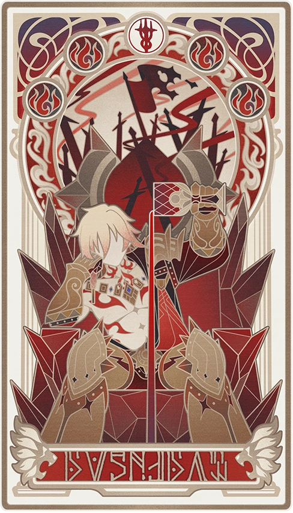
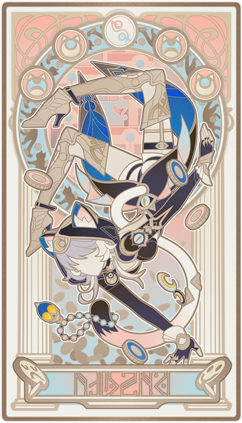
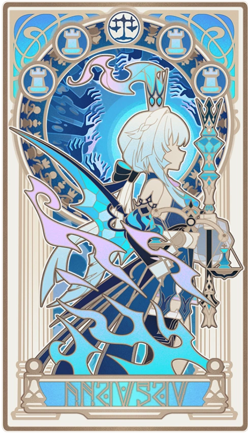
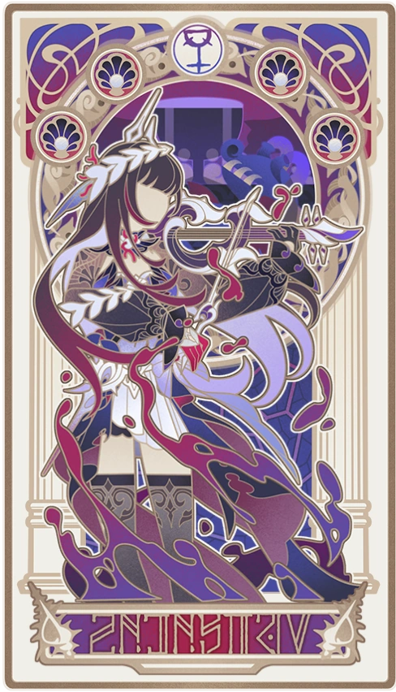

Evernight's Chrysos Heirs MBTI Analysis Report
Find your Myers-Briggs personality type based on which Chrysos Heir you resonate with the most.
DISCLAIMER: These descriptions are based entirely on personal observations made my Evernight, the Demigod of Time.
Castorice – INFP
A reclusive little butterfly, often fluttering away from crowded places. When you find her
in a
corner, you realize she hasn't missed a single moment, taking to heart all of life's joys
and
sorrows. "Death" may have stolen the warmth from her palm, but she still gifts the world
with
beautiful stories full of warmth.
This fairy tale collection of the little butterfly, bought at the market, will surely be
loved
by
March

Mydei – ISTJ
He views promises as inviolable principles: Amidst mountains of corpses and seas of blood,
his
subordinates begged him to retreat first, but he would rather die a thousand deaths than
break
his
vow to live and die together. In daily life, this straightforward prince believes everyone
is as
honest as him.
When someone said to a chimera, "You're so cute, I could eat you up," he immediately scooped
up
the
soundly sleeping creature and ran far, far away.

Cipher – ENFP
The Trickery Demigod's treasury is filled with countless wonders, each one hiding little
secrets
she's reluctant to reveal.
Most of the time, this little Dolos kitty lives like the free-flowing wind, taking endless
delight
in running circles around everyone.
However, she's occasionally seen in the distant desert, sighing alone at the moon. Perhaps
she's
still yeaming for that city where the sun never sets.

Hyacine – ESFJ
Warm and healing, like a little pink cupcake. I bet March would love her courtyard.
Everything's
so
neat and cozy, and you can't help but want to drift off into sweet dreams on the lounger.
When I'm away, if March feels troubled... why not have afternoon tea with her? After all,
even
the
gloomiest person can't help but smile when they see Little Ica.

Phainon – ENFJ
What started as a small gathering turned into a packed house with no seats left. On his way
there,
he'd bumped into the antique shop owner, a Kremnos soldier, and even a bath attendant. He'd
warmly
asked each about their lives and extended the same invitation: "Wanna grab a drink?"
Strangely enough, the gathering was filled with joy and laughter. Only the greengrocer
expressed
concern, questioning his obsession with Flame-Chasing, given the
uncertain future and slim chances of survival. He smiled and said: "Even if there are
countless
possibilities of futility ahead, as long as that single hope exists, it's worth giving it my
all."

Aglaea – INFJ
The long pursuit of Flame-Chasing had hardened her heart, like that of the Imperator back a thousand years ago. Now she caresses the old blueprints as if touching a stranger's relics. Yet in many past mornings, she had run barefoot through corridors, rejoicing in the elegant garments she'd crafted through sleepless nights. In the empty chest cavity of the mannequin, there once dwelled a butterfly that trembled only for romance and beauty.

Cyrene – ENFP
I love her pink hair. In forgotten years, a withered petal still remains, stubbornly and
tenderly
repainting the world in romantic pink.
I know how lonely the back of the silent world can be, where she is now... She must have
traversed
countless dark nights alone, clutching those treasured memories: Love, touching moments, the
compassionate companions she once shared, and... the lone star that illuminated her heart
throughout
the night.

Anaxa – INTJ
His sister once gave him a mechanical singing bird. He loved it so much that the next day he took it apart into pieces scattered across the table, excitedly explaining its logic to his sister, but ultimately couldn't put it back together. Looking at the remains, he pondered for a moment and said, I have deciphered its essence. A soul that values rationality above all and verifies everything firsthand. But once trust is earned, he offers unwavering loyalty without question.

Cerydra – ENTJ
A ruthless, domineering personality that only cares about results, cold-hearted to the point
of
inhumanity.
After a military defeat, Cerydra locked herself in the study for three days. Learning of
this,
Hysilens remained silent, only standing at a distance with her violin. This comfort was
unfamiliar
to the Imperator: It could neither intervene in the war nor illuminate reality. Yet it was
this
gentle, wave-like care that dissolved the emperor's unease in her gaze.

Hysilens – ISFP
The feast-bound sea siren princess may not understand fancy clothing and jewelry, but she
takes
meticulous care of her appearance down to every strand of hair until she's absolutely
radiant.
"How
far along are you?" Aglaea asked impatiently.
"Just doing my bangs," she replied.
I remember her solo that night: An endless sorrow swallowed her whole, and even after the
last
note
faded, she stood frozen, her spirit still adrift. She offered selfless loyalty to the
sovereign
in
her heart, yet still couldn't see her own reflection.

Tribbie – ENFJ
In everyone's eyes, each encounter between the Children of the Prophecy and every Chrysos
Heir
was
destiny's gentle nudge.
But what I saw... was them waiting at that fated corner where paths would cross, welcoming
every
lost hero with genuine smiles. The cat, the lion, the little butterfly... they are the
tenacious
bonds that weave all our destinies tightly together.